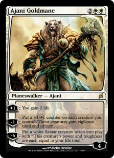
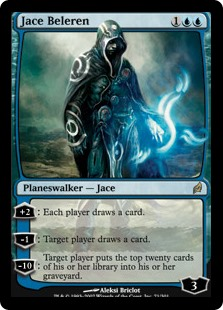
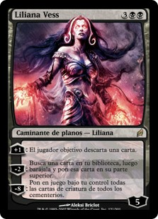
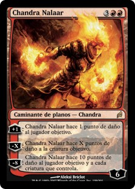
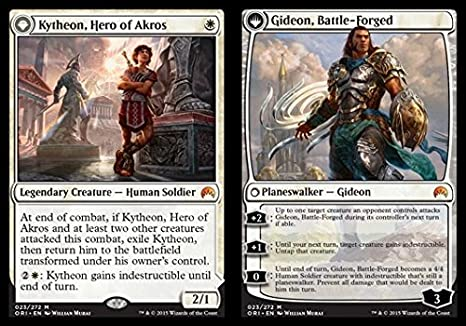

Planewalkers
|  |
 |
 |
 |
 |
Apareciendo por primera vez en el año del 2007 en la expansion de Lorwyn y abriendose camino hasta nuestros dias los planewalkers marcaron un antes y un despues en el juego de Magic,
sin duda alguna fue todo una revolucion cuando pudimos usar a estos poderoso aliados, con sus habilidades pueden salvarte la vida en el ultimo segundo u bien condenar a tu oponeten
a la amarga derrota, como muchos otros jugadores llegue a pensar que solo seria una moda pasajera, por suerte que nos equivocamos en ese calculo y hoy en dia podemos seguir disfrutando
de los beneficios de los planewalkers en todos los formatos del Magic.
Planewalkers Creatures
|  |
Y si bien ya habiamos visto que el tipo de permanente de criatura se ha combinado con casi todo ¿por que no hacerlo con un planewalker? Y asi fue como las plegarias de muchos fue escuchada,
entrando en la escena en el años 2015 las criaturas que bajo determinadas condiciones se convierten en planewalkers dijeron presente, algunos de ellos se convietieron en el motor de un deck
hasta el punto de ser banneados (mas adelante explicare lo que es el banneo de cartas) para frenar un poco la diversion sin fin que sus valiosos servicios nos brindan. |